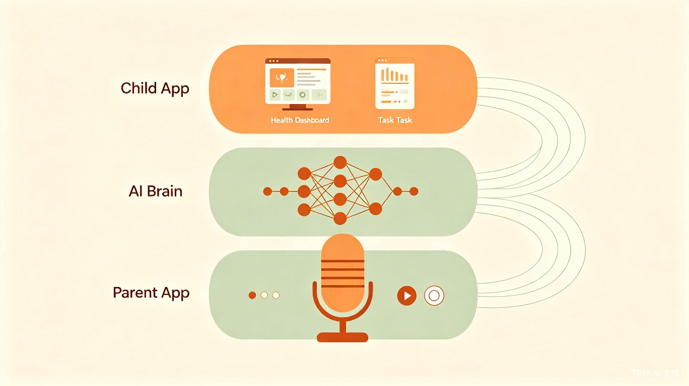
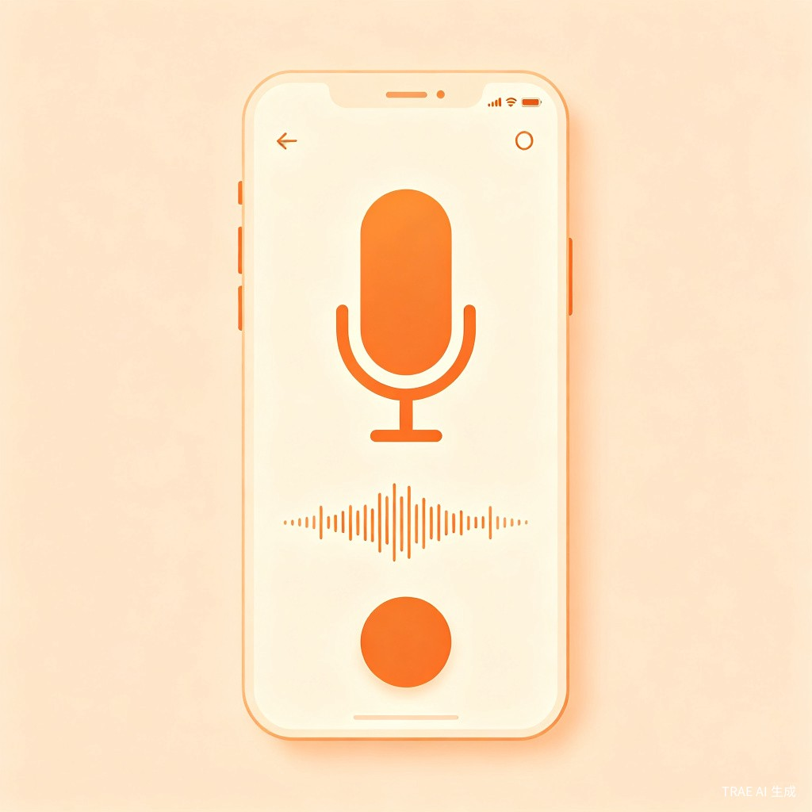
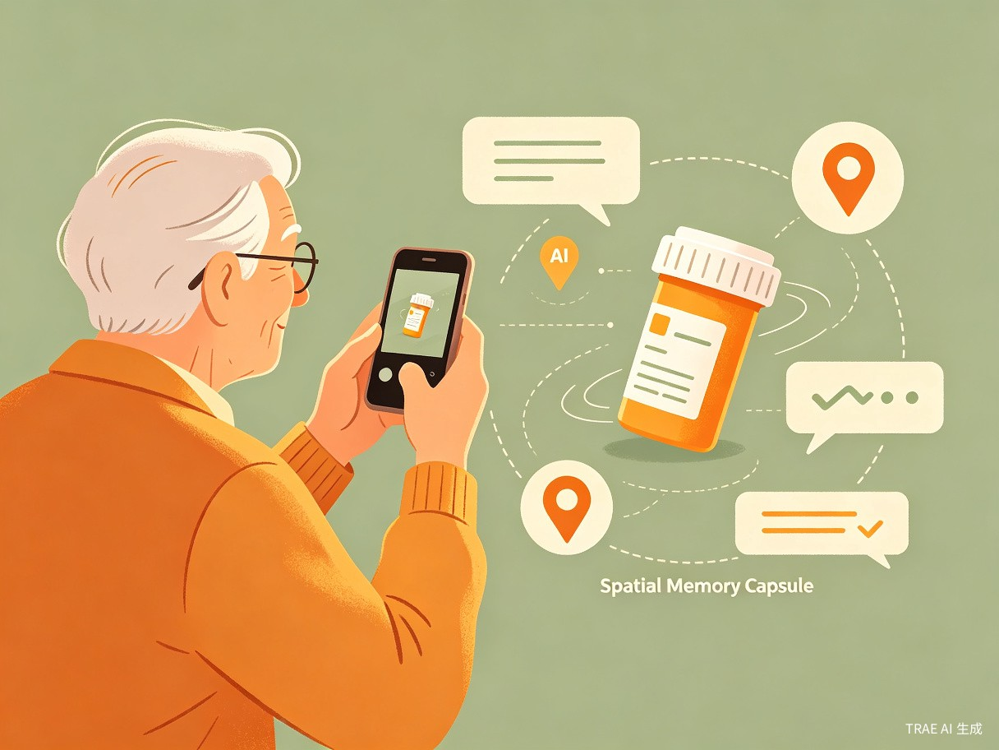
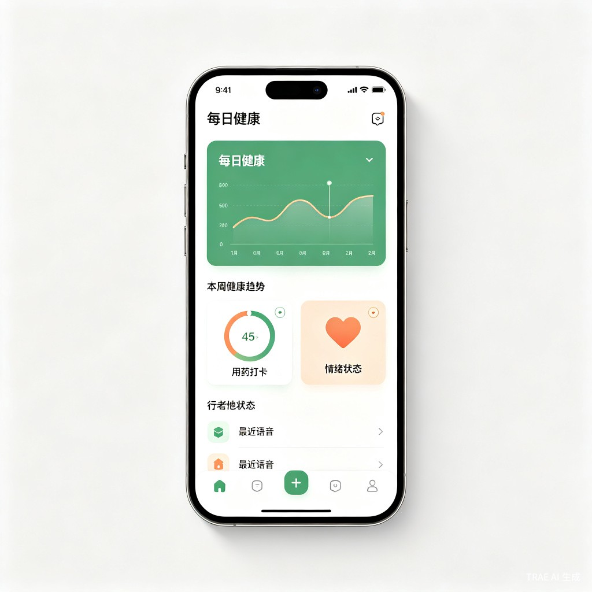
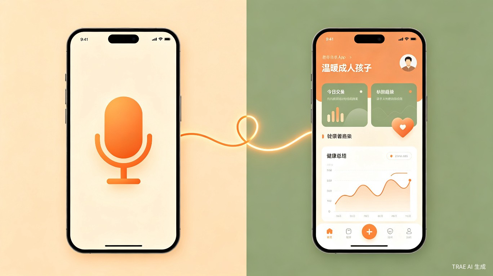

"科技不应强迫老人适应机器。真正的人文关怀，是让技术隐身于生活之后，让亲情自然流淌于日常之中。"
一、创意介绍
1.1 想解决什么问题
中国有超过 2.8 亿 60 岁以上老年人，其中 空巢老人占比超过 50%。异地家庭的子女与父母之间，存在三重难以逾越的鸿沟：
- 健康信息断层：父母"报喜不报忧"，子女无法及时了解父母的真实健康状况
- 数字使用障碍：复杂 App 界面让老人望而却步，智能设备反而成为负担
- 情感连接稀释：忙碌的工作让子女无暇每日问候，亲情在距离中逐渐淡漠
1.2 为什么会想到做这个
这个产品的种子，埋在一次深夜的医院走廊里。
父亲 58 岁那年查出糖尿病。那时候全家人都觉得"吃药就行"，没人真正盯着他的血糖和血压。两年后，60 岁的父亲突发脑梗，倒在地上。医生说得直白："要是日常监测到位，根本不会走到这一步。"
母亲那边又是另一种煎熬。她常年带着几种慢性病，身体说不上差，却总在走下坡路。最让她焦虑的不是病痛，是记性——降压药明明刚放下，转身就忘了在哪；冰箱里的东西买了多久，心里完全没数。我给她下过几个健康 App，她盯着满屏的按钮和小字，最后只是摆摆手说"太复杂了，搞不来"。
那一刻我突然意识到：我们这一代人给父母买了智能手机，却从没想过他们是不是真的能用得上。慢性病不会因为"吃药"就自动听话，记忆衰退也不会因为子女的叮嘱就停下脚步。真正缺的不是提醒，而是一个老人不需要学、子女不需要催的"无感"守护。
于是有了《回音》——让老人像日常聊天一样"说"出健康，让子女在千里之外也能"听"见安心。
1.3 产品形态
《回音》是一款专为异地家庭设计的 双端协同 App：
- 父母端：极简语音交互界面，全局大按钮，支持方言识别，零学习成本
- 子女端：数据可视化仪表盘，可远程代管父母健康档案与提醒任务
- AI 中枢：将父母的语音碎碎念转化为结构化健康数据与情感简报

二、目标用户及痛点
2.1 核心用户群体
主要用户：独居/空巢老人（60-80岁）
有一定生活自理能力，但记忆力下降、数字设备使用困难、需要日常健康监测与情感陪伴
协同用户：异地子女（25-45岁）
工作繁忙、与父母分居两地，关心父母健康但缺乏有效工具，希望在不打扰父母的前提下实现远程守护
2.2 使用场景
| 场景 | 用户行为 | 《回音》如何介入 |
|---|---|---|
| 晨起用药 | 老人吃完降压药，对着手机说"今早吃了降压药" | AI 自动记录用药时间，生成服药打卡；若漏服，子女端收到提醒 |
| 日常记录 | 老人随口说"今天去公园走了半小时，有点头晕" | AI 提取运动数据与症状关键词，子女端傍晚收到健康摘要 |
| 找东西 | 老人找不到降压药，拍照并说"药放在电视柜" | AI 绑定物品-位置-照片，语音搜"降压药在哪"即可找回 |
| 子女关心 | 子女下班打开 App，查看父母今日状态 | 收到 AI 生成的温情简报："妈妈今天情绪不错，但提到头晕，建议晚上电话关心" |
| 定时提醒 | 子女为父母设置"每周三下午提醒浇花" | 到点后 AI 用温和方言语音提醒，老人回复后自动消除备忘 |
2.3 当前痛点
如果没有《回音》，用户现在会遇到以下不便：
- 老人想记录健康情况，但复杂的表单和菜单让他们望而却步，最终放弃使用
- 子女想了解父母状况，只能依赖电话询问，父母"报喜不报忧"导致信息严重滞后
- 老人经常忘记东西放在哪里，反复打电话问子女，双方都感到疲惫
- 市面上的健康 App 功能堆砌、界面复杂，老人学会后很快忘记，沦为"僵尸应用"
- 现有的语音助手对老人不友好，不支持方言，且无法与子女端形成闭环
三、核心功能设计
3.1 父母端：零门槛语音交互


超级麦克风
按住说话，AI 自动提取饮食、运动、症状生成结构化日志。支持 18-20 种方言识别。例如：老人用四川话抱怨"今天脑壳昏沉沉的，不想吃饭"，AI 不仅能精准识别语义，还能通过语调分析捕捉老人情绪低落。
AI 隐形备忘录
老人随口交代事项，AI 自动设定提醒。到点后语音询问，老人回复后自动消除。
空间记忆胶囊
拍照+语音（如"降压药在电视柜"），AI 打包【物品+位置+照片+时间】，支持语音搜物。
被动接收提醒
老人无需操作，AI 在特定时间用温和方言准时提醒该做什么，如用药、浇花、体检。
3.2 子女端：远程守护大脑

专属健康档案 (PHR)
静态档案（病史、用药）+ 动态档案（AI 自动补充生活轨迹）。支持拍照上传出院小结自动提取。
智能任务调度
AI 基于档案自动生成任务（如"降压药快吃完，提醒复购"），子女可自定义定时任务。
AI 每日摘要
每天傍晚推送温情总结："妈妈今天情绪不错，但提到头晕，建议晚上电话关心"。
亲情互动
语音明信片（子女发，老人听）、同频陪伴（老人听戏时子女一键点赞）。
AI 紧急熔断机制
当 AI 识别到"救命"、"摔倒了"、"喘不上气"等高危词汇时，立即向子女发送最高级别警报，并自动拨打紧急联系人电话，实现生死攸关时刻的秒级响应。
四、价值与意义
4.1 社会价值
《回音》直面中国老龄化社会最尖锐的痛点之一——空巢老人的健康与情感双重缺失。据民政部数据，我国空巢老人已超过 1.3 亿，其中相当比例存在"孤独死"风险。本产品通过技术手段重建异地家庭的日常连接，让子女即使远在千里之外，也能"无感"地参与到父母的健康管理与情感陪伴中。
更重要的是，《回音》坚持"技术隐身"原则——老人不需要学习任何新技能，只需像日常说话一样使用产品。这打破了传统智慧养老产品"技术门槛高、老人学不会"的困局，真正实现了科技普惠。
4.2 效率价值
对于子女而言，《回音》将原本碎片化的关心行为（打电话、问健康、记用药）整合为"被动接收信息"模式，大幅降低时间成本。AI 每日摘要让子女用 30 秒了解父母全天状态，而非 30 分钟的电话追问。对于老人而言，语音交互比打字输入效率提升 5-10 倍，且更符合老年人的自然表达习惯。
4.3 落地推广与公益触达
在落地推广上，《回音》采用 "社区网格员/志愿者代建" 模式。社区工作人员或志愿者上门协助老人完成首次绑定与基础设置，子女后续远程接管，彻底打通适老化的"最后一公里"。这一模式确保即使完全不会使用智能手机的老人，也能在他人帮助下零门槛接入。同时，我们将与街道、社区养老服务中心合作，将《回音》纳入社区智慧养老服务包，真正实现公益产品的普惠触达。
4.4 商业价值
中国智慧养老市场规模预计 2025 年突破 6 万亿元，其中健康管理与远程监护是增长最快的细分领域。《回音》具备清晰的商业化路径：
- 基础版免费：语音记录、健康档案、每日摘要
- 高级订阅：AI 健康趋势预测、紧急呼叫服务、多成员家庭版
- B2B 合作：与社区养老中心、保险公司、医疗机构合作部署
五、技术实现与安全保障
5.1 核心技术栈
| 模块 | 技术方案 | 说明 |
|---|---|---|
| 端侧语音预处理 | Whisper.cpp + RNNoise | 端侧处理与隐私脱敏：利用 Whisper.cpp 轻量级端侧模型进行本地 ASR 转文字，RNNoise 进行实时降噪；原始语音在本地转文字后即销毁，云端仅存储结构化 JSON 标签，绝不保留声纹和原音 |
| 语音交互 | 火山引擎（豆包）ASR + TTS | 支持 18-20 种方言，抗噪识别率 >87%；仅在触发关键词后调用云端大模型进行深度语义分析 |
| 语义理解 | 大模型 NLU | 将非结构化语音转化为结构化 JSON 数据 |
| 前端开发 | Flutter 跨平台框架 | 一套代码同时覆盖 iOS 与 Android 双端 |
| 数据存储 | 云端结构化数据库 + 本地缓存 | 结构化 JSON 标签云端存储，原始录音与声纹数据零留存 |
5.2 防幻觉与隐私安全机制
五重安全防线
- 端侧处理与隐私脱敏：原始语音在本地完成 ASR 转文字后即销毁，云端仅存储结构化 JSON 标签，绝不保留声纹和原音，从根本上杜绝隐私泄露风险
- 角色隔离：办事模式下 AI 仅作为"信息提取器"，严禁提供医疗建议
- RAG 检索增强：找物时仅基于本地数据库回答，未查到统一回复"没找到，是否呼叫女儿"
- 敏感词拦截：输出端正则过滤，拦截用药建议，强制替换为"请及时就医或联系家属"
- 置信度提示：AI 提取模糊信息时在子女端标黄【待确认】，将最终裁判权交还子女
5.3 紧急熔断的误报防御与隐私平衡
误报防御：三重校验机制
针对"老人看电视时剧情出现'救命'导致误报"的场景，我们在算法层面加入了声纹确认 + 环境音识别 + 语义上下文三重校验：
- 声纹确认：仅当识别到特定关键词且声纹为老人本人时，才进入熔断候选
- 环境音识别：需伴随异常环境音（如重物落地声、玻璃破碎声）才提升警报级别
- 语义上下文：结合前后语句判断是否为真实求救，如"电视里的人在喊救命"会被 AI 识别为转述而非真实求救
单纯的电视声音会被系统智能过滤，确保紧急警报的准确性。
隐私与安全的平衡设计
针对"云端不存录音，子女如何回溯现场"的疑问，我们采用分级隐私策略：
- 日常模式：坚持"数据最小化"原则，仅上传结构化 JSON 标签，保护老人日常隐私
- 紧急熔断模式：触发紧急熔断后，系统自动开启临时录音上传模式，将事发前 30 秒的音频加密上传供子女回溯，帮助判断事态严重程度
- 熔断结束后：临时录音自动删除，恢复日常模式的零录音留存策略
这一设计在"保护日常隐私"与"紧急时刻可追溯"之间取得了最佳平衡。
六、MVP 开发规划
| 阶段 | 目标 | 交付物 |
|---|---|---|
| Week 1 | 基础架构搭建 | Flutter 双端 App 基础路由与 UI 框架 |
| Week 2 | 核心链路打通 | 老人端录音 -> 大模型 API -> JSON 提取 -> 子女端展示 |
| Week 3 | 空间记忆模块 | 拍照+语音+AI 绑定闭环，语音搜物功能 |
| Week 4 | 内测与调优 | 3-5 个真实家庭灰度测试，优化方言识别与 AI 提取准确率 |

让世界很大，亲情很近
《回音》不仅是一款产品，更是一份让科技有温度的承诺。我们相信，最好的技术不是让老人学会新东西，而是让技术学会理解老人。